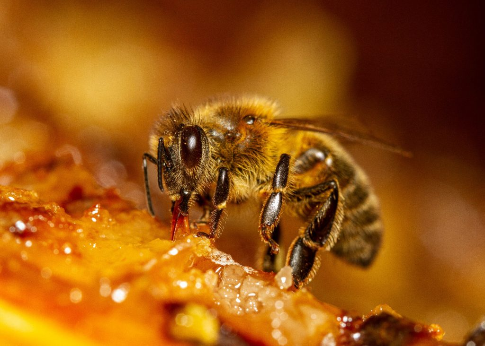
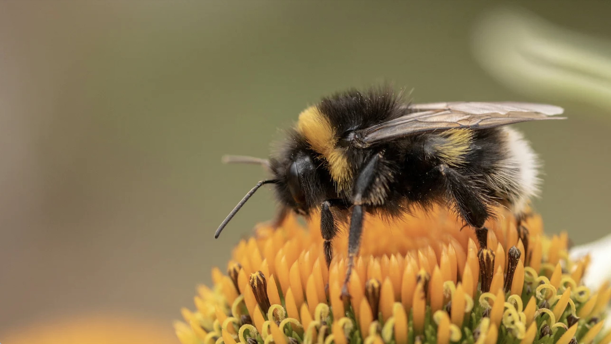
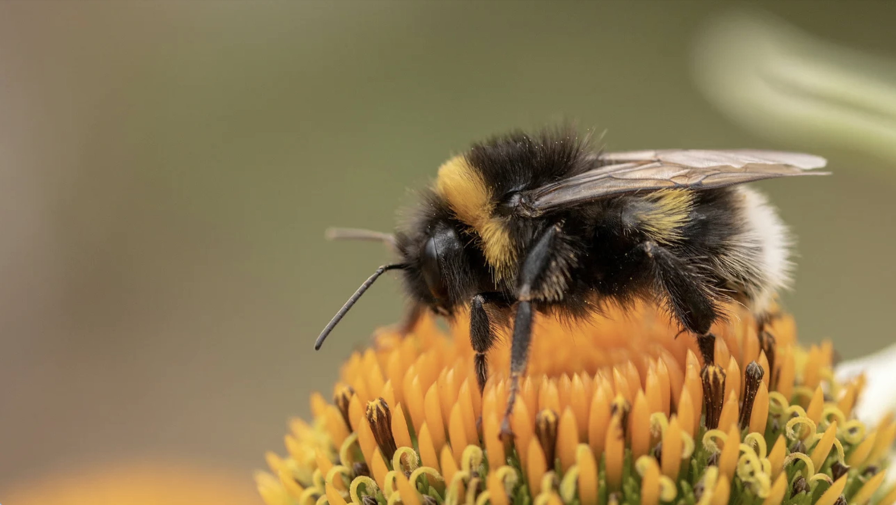
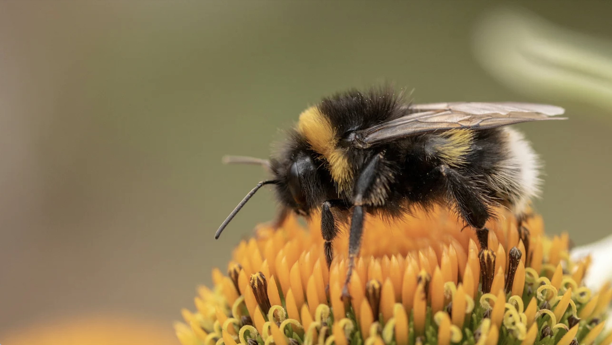

In Nederland zijn er ongeveer 350 verschillende soorten bijen, deze zijn
onderverdeeld in 3 hoofdgroepen:
Honingbijen
De meest voorkomende bijensoort is de honingbij. Anders dan de andere
soorten zijn honingbijen het hele jaar aanwezig, dus ook in de winter.
Ze leven in grote volken van ongeveer 10.000 bijen in de winter tot
40.000 in de zomer. In het volk leeft de koningin, een grotere bij die
eitjes legt. Haar aanwezigheid zorgt ervoor dat alles in het volk goed
functioneert.
Solitaire bijen
Hoeveel soorten solitaire bijen er in ons land voorkomen weten we niet
goed. Solitaire bijen, de naam zegt het al, leven alleen. Dus niet in
een volk zoals de honingbij. Er zijn meer dan 300 verschillende soorten
solitaire bijen. Het herkennen is niet eenvoudig. Sommige zijn ongeveer
net zo groot als honingbijen, circa 1,5 cm, andere niet groter dan een
paar millimeter. Bij solitaire bijen heb je alleen vrouwtjes en
mannetjes, dus geen koningin.
Hommels
Opvallend dicht behaard is een kenmerk van hommels. Ze zijn daardoor
beter in staat zichzelf te verwarmen, waardoor ze ook bij lagere
temperatuur al kunnen vliegen. In het voorjaar zie je alleen de forse
koninginnen op zoek naar een nestplaats. Een maand of twee later komen
haar dochters, de kleinere werksters tevoorschijn. Er zijn ruim 20
soorten bekend in ons land, maar slechts een handjevol komt algemeen
voor. Hommels zijn uitstekende bestuivers voor allerlei soorten
voedselgewassen en voor bijvoorbeeld tomaten zelfs onmisbaar.



 
